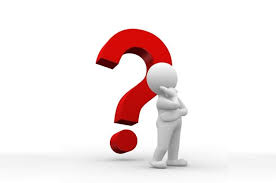

BykeSyte is a smart safety device that easily attaches to your bike and alerts you when a car approaches dangerously close, helping you stay aware and protected on the road. Inspired by a real incident at our school — where a student was struck while crossing — we created BykeSyte to make biking safer for everyone. Installation is quick and simple, taking less than 10 minutes. Whether you're commuting, exercising, or just out for a ride, BykeSyte is an essential companion for every cyclist who values safety. Here's how it works: :
-
Real-Time Alerts: BikeSight instantly notifies the rider when a vehicle gets too close, providing critical seconds to react.
-
Technology Integration: Uses a Raspberry Pi, high-resolution camera, LED alerts, OpenCV object detection, and a loud buzzer.
-
Inspired by Real Incident: Developed in response to a school incident where a student was struck while crossing, aiming to make biking safer for everyone.
-
Focus on Safety: Safety should never be optional, especially for young riders, and BikeSight ensures they stay protected on the road.
🛡️ Why BikeSight?
Early Detection
Our intelligent camera system constantly scans the surroundings, detecting approaching objects and people before they become a danger.
Instant Alerts
Bright LED lights and a loud buzzer alert the rider the moment a nearby presence is detected—no apps, no distractions, just pure focus on the road.
Kid-Friendly Design
Designed with school-going children in mind, BikeSight offers an extra layer of protection during high-traffic pickup and drop-off times, when every second counts.
Portable & Easy to Use
Simple to mount, easy to charge, and ready to go wherever the road takes you. Just turn it on and ride safely.
Affordable Technology
BikeSight brings advanced safety features to every bike without the expensive price tag. Peace of mind shouldn't be a luxury.
 How BikeSight Works
Detect
The onboard camera and OpenCV technology continuously scan the rider's surroundings.
Analyze
Smart algorithms instantly identify if someone is getting too close.
Alert
LED lights flash and a buzzer sounds, warning the rider of potential hazards in real time.
Protect
BikeSight gives riders—especially kids—more awareness, more control, and more confidence.